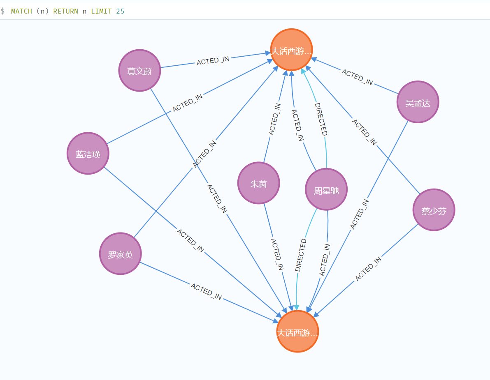
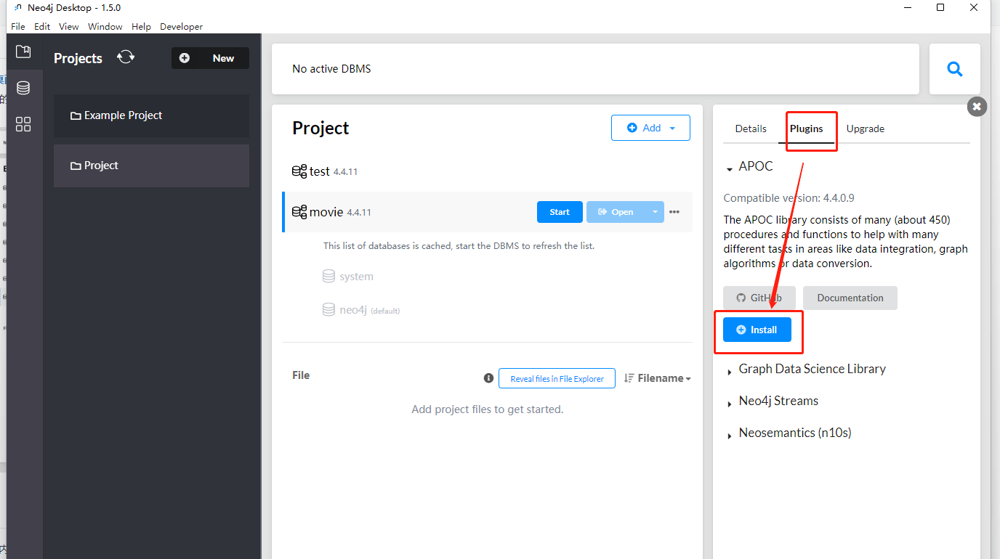
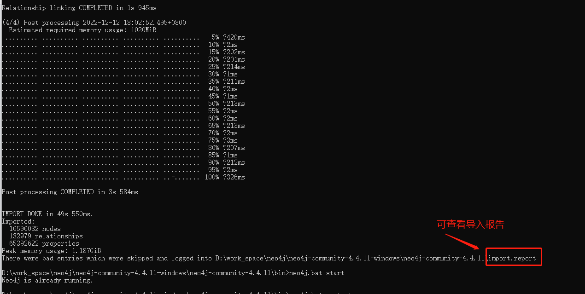

一、Neo4j的概述
- Neo4j是一个高性能的,NOSQL图形数据库，它将结构化数据存储在网络上而不是表中。
- 它是一个嵌入式的、基于磁盘的、具备完全的事务特性的Java持久化引擎，但是它将结构化数据存储在网络(从数学角度叫做图)上而不是表中。
- Neo4j也可以被看作是一个高性能的图引擎，该引擎具有成熟数据库的所有特性。
- 程序员工作在一个面向对象的、灵活的网络结构下而不是严格、静态的表中——但是他们可以享受到具备完全的事务特性、企业级的数据库的所有好处。
来自：百度百科
1、Neo4J的特点
- Cypher是Neo4j的图形查询语言
- 它遵循属性图数据模型
- 它通过使用Apache Lucence支持索引
- 它支持UNIQUE约束
- 它支持完整的ACID（原子性，一致性，隔离性和持久性）规则
- 它采用原生图形库与本地GPE（图形处理引擎）
- 它支持查询的数据导出到JSON和XLS格式
- 它提供了REST API，可以被任何编程语言（如Java，Spring，Scala等）访问
- 它提供了可以通过任何UI MVC框架（如Node JS）访问的Java脚本
- 它支持两种Java API：Cypher API和Native Java API来开发Java应用程序
2、Neo4j图数据库主要有以下构建块
- 节点
- 节点是图表的基本单位。 它包含具有键值对的属性
- 属性
- 属性是用于描述图节点和关系的键值对
- 关系
- 关系是图形数据库的另一个主要构建块。 它连接两个节点
- 每个关系包含一个起始节点和一个结束节点
- 标签
- Label将一个公共名称与一组节点或关系相关联。
- 节点或关系可以包含一个或多个标签
- 我们可以为现有节点或关系创建新标签，也可删除标签
- 数据浏览器
- 安装Neo4j后，我们可以通过浏览器访问Neo4j数据
- 默认地址：http://localhost:7474/browser/
二、Neo4j的安装与使用
- Neo4j有三种版本：社区版（免费）、桌面版（免费一年）、企业版（收费）
- 社区版是 Neo4j 的全功能版本，适用于单实例部署，它完全支持Neo4j的关键功能，例如符合ACID标准的事务，密码和编程API。
- 桌面版是开发人员使用本地 Neo4j 数据库的便捷方式，不适合生产环境。
- 企业版扩展了社区版的功能，以包括性能和可伸缩性的关键功能，例如群集体系结构和在线备份功能。其他安全功能包括基于角色的访问控制和 LDAP 支持，例如，活动目录。它是具有规模和可用性要求的生产系统的选择，例如商业解决方案和关键内部解决方案。
地址相关：
- 下载地址：https://neo4j.com/download-center/#community
- 操作手册地址：https://neo4j.com/docs/operations-manual/4.4/introduction/
- 入门开发指南：https://neo4j.com/docs/getting-started/4.4/
- 桌面版文档：https://neo4j.com/docs/desktop-manual/current/
安装服务 |
三、Cypher 简介
- Neo4j安装好之后，就可以给它添加数据了.
- Cypher是一种声明性图形查询语言，允许对图形进行富有表现力和有效的查询，更新和管理。
- 文档地址：https://neo4j.com/docs/cypher-manual/current/
- 语法格式：https://neo4j.com/docs/cypher-cheat-sheet/4.4/
1、Cypher 语法
- 常用的语法有
| 语法 | 描述 |
|---|---|
| CREATE | 创建节点，关系和属性 |
| MATCH | 检索有关节点，关系和属性数据，要匹配的图形模式。这是从图形中获取数据的最常见方法。 |
| RETURN | 返回查询结果 |
| WHERE | 提供条件过滤检索数据 |
| DELETE | 删除节点和关系 |
| REMOVE | 删除节点和关系的属性 |
| ORDER BY | 排序检索数据 |
| SET | 添加或更新标签属性 |
| MERGE | 创建节点，关系和属性 |
①、CREATE
- 创建语法格式大致如下：
// 方式一： 格式 |
- 来一个实战语法：
// 创建大话西游两部电影节点 Movie |
ACTED_IN 代表关系类型，表演的意思，DIRECTED 也是关系类型，导演
- 执行上面命令之后，可得节点如下：

②、MATCH
- MATCH 检索有关节点，关系和属性数据
- 如下：
// 查询所有节点 |
③、RETURN
- RETURN常与其他语法组合使用
- 可以返回节点的某些属性，或所有属性，关联关系的属性等
|
④、WHERE
- WHERE子句一般是用来过滤MATCH查询的结果
|
⑤、DELETE
- DELETE可以删除节点及其关联节点和关系。
|
⑥、REMOVE
- REMOVE命令用于：
- 删除节点或关系的标签
- 删除节点或关系的属性
和DELETE的主要区别
- DELETE操作用于删除节点和关联关系。
- REMOVE操作用于删除标签和属性。
// 删除 节点name=莫文蔚的born属性 |
⑦、ORDER BY
- 和数据库SQL一样，也是排序的意思
- 例子如下：
// 查询 Person所有节点，按born升序返回 |
⑧、SET
- 可以向现有节点或关系添加新属性。
- 添加或更新属性值
- 例子如下：
// 上面删除了吴孟达的关系属性roles,现在重新给他加上 |
⑨、UNION
UNION的意思是合并，可以将不同的结果合并成一组结果UNION ALL也是合并，和UNION不同的是:UNION会去重，UNION ALL不会
// 合并 Person类型和Movie类型，不同字段名，所以需要用as 使用别名 |
⑩、MERGE
- MERGE 命令检查该节点在数据库中是否可用。避免重复
- 如果它不存在，它创建新节点。 否则，它不创建新的。
- 例子：
// 这个是创建节点不成功的，因为Person已经有name=周星驰的节点了 |
2、其他复合查询
- 上面已经基本介绍了简单语法，现在来试试把他们组合成复杂语法
- 例子：
// 创建意中人关系的A、B节点 |
3、Cypher函数
常用函数有：
字符串函数
- toUpper
- 它用于将所有字母更改为大写字母
- toLower
- 它用于将所有字母改为小写字母。
- coalesce
- 可以判断字符串是否为空，可以给一个默认值
- substring
- 字符串截取
- replace
- 它用于替换一个字符串的子字符串。
- toUpper
数字相关函数
- count
- max
- min
- sum
- avg
关系函数
STARTNODE
- 它用于知道关系的开始节点。
ENDNODE
- 它用于知道关系的结束节点。
ID
- 它用于知道关系的ID。
TYPE
- 它用于知道字符串表示中的一个关系的TYPE。
- 其他函数
- size
- 用户返回列表集合的个数
- collect
- 可以把列的数据收集起来
- size
// 朱茵的 eName 大写返回 |
4、Cypher索引
// 创建一个以 Person类型的name属性为索引 |
四、启用APOC
- APOC是Java编写的一个Neo4j的插件库。
- 它提供了数据集成，数据导出，数据结构，高级图查询等诸多功能
- 文档地址：https://neo4j.com/labs/apoc/4.4/
- Github地址：https://github.com/neo4j-contrib/neo4j-apoc-procedures
1、社区版安装APOC
- 如果是下载的是社区版的话，在Neo4j的安装目录下有一个labs目录
- 直接把labs下的
apoc-4.4.0.8-core.jar（不同版本，这里的名称也不同）复制到plugins目录下即可 - 默认情况下，只启用不使用低级API的一些函数。要启用所有APOC程序，还需要配置
- 在
conf/neo4j.conf配置文件中添加：dbms.security.procedures.unrestricted=apoc.* - 重新启动Neo4j，然后执行命令：
RETURN apoc.version()就会返回apoc的版本（说明成功) - 或者执行：
call apoc.help("apoc");返回apoc的函数相关信息
2、桌面版安装APOC
- 打开桌面版，然后点击项目=> 选择一个数据库=>右边选择Plugins=>找到Apoc安装即可

3、函数使用示例
// apoc 的命令帮助文档 |
4、APOC文件的导入导出
- 文件的导出导入需要添加配置文件：
apoc.conf - 新建一个
apoc.conf配置文件放在Neo4j安装目录的conf目录下 - 编辑如下内容，一个是开启导入功能，一个开启导出功能
apoc.import.file.enabled=true |
- 重启Neo4j服务就可以使用相应的导入导出函数
- Neo4j默认的导入导出目录是在
import目录。 - 可以在
neo4j.conf内容中看到：dbms.directories.import=import（可修改） - 命令示例：
①、导入：
导入的语法格式：
apoc.import.csv(<nodes>, <relationships>, <config>)是一个对象数组，代表节点，里面有两个属性： fileName、labels
属性 描述 示例 fileName 文件所在位置，string类型 'file:/persons.csv'labels 节点的标签，是一个数组类型 ['Person', 'Movie']是一个对象数组，代表关系，里面有两个属性：fileName、type
属性 描述 示例 fileName 文件所在位置，string类型 'file:/persons.csv'type 关系类型 'WORKS_AT'是一个对象，代表一些配置项
属性 类型 默认 描述 delimiter String ， 列之间的分隔符字符 arrayDelimiter String ； 数组中的分隔符字符 ignoreDuplicateNodes Boolean false 对于重复的节点，仅加载第一个节点并跳过其余节点（真）或导入失败（假） quotationCharacter String “ stringIds Boolean true 将 ID 视为字符串 skipLines Integer 1 要跳过的行（包括标题） ignoreBlankString Boolean false 如果为 true，则忽略具有空白字符串的属性 ignoreEmptyCellArray Boolean false 如果为 true，则忽略包含单个空字符串的数组属性，如导入工具 compression Enum[NONE, BYTES, GZIP, BZIP2, DEFLATE, BLOCK_LZ4, FRAMED_SNAPPY] null 允许获取未压缩（值：）或压缩（其他值）的二进制数据。请参阅二进制文件示例 NONE- 例子如下：
如果是多类型节点加关系的话，用apoc导入好麻烦，感觉用代码快多了
下面时apoc导入的官方示例：
// persons.csv 是存节点的，knows.csv 是建立关系 |
persons.csv
:ID|name:STRING|speaks:STRING[] |
knows.csv
:START_ID|:END_ID|since:INT |
②、导出：
//导出数据为movie1.csv文件，点击右边的下载按钮，文件会下载到安装目录的import目录下 |
五、大数据量导入Neo4j
小数据量，我们可以用Cypher语法导入
千万上亿级别的，推荐使用
neo4j-admin import- neo4j-admin 只能用于导入到未使用的数据库中，也就是需要清库
- 需要把数据转成 csv文件
来看栗子：演员 -出演->电影
我们现在需要准备3个csv文件：演员节点文件、电影节点文件、演员与电影的关系文件
演员节点文件：
actors.csv,内容大致如下：personId:ID,username,:LABEL
tt01111,"周星驰",Actor
tt02222,"朱茵",Actor
tt03333,"吴孟达",Actor;PersonpersonId:ID中的:ID代表是节点的id,之后的关系连接也是用这个字段username是这个节点的属性字段：名字，如果需要多个属性，可以往后添加列:LABEL代表生成的节点Label叫什么，如果有多个Lable用;隔开
电影节点文件：
movies.csv,内容如下：movieId:ID,title,year:int,:LABEL
tt01,"大话西游之月光宝盒",1994,Movie
tt02,"大话西游之大圣娶亲",1994,MoviemovieId代表节点ID，title和year:int代码节点的属性，year:int代表year这个属性是int类型的。:LABEL和演员节点一样意思，代表生成的节点Label叫什么，后期不再介绍
演员与电影关系文件：
rel.csv:START_ID代表建立关系的开始节点IDrole就是关系的属性，多个就在后面多加几列即可:END_ID代表建立关系的结束节点ID:TYPE代表关系的Label名称
当文件准备好，我们就可以使用命令导入了,把上面的3个文件放到neo4j安装目录下的
import目录下在neo4j安装目录下的bin目录下有：
neo4j-admin可执行程序执行它，命令如下：neo4j-admin import --database=neo4j --nodes=import/actors.csv --nodes=import/movies.csv --relationships=import/rel.csv --force=true --skip-duplicate-nodes=true
--database导入到哪个库--nodes代表存放节点数据的文件，包含header(列头就是属性名)--relationships代表存放节点之间的关系文件--force代表在导入之前强制删除任何现有数据库文件--skip-duplicate-nodes代表 确定是否跳过导入具有相同 ID/组的节点- 常用的其他选项参数：
--skip-bad-relationships代表允许跳过引用关系缺失节点ID(找不到节点)--multiline-fields表示输入源中的字段是否可以跨越多行，即包含换行符--delimiter表示csv数据中值之间的分隔符- 还有很多选项就不一一列举了，可看官方文档：https://neo4j.com/docs/operations-manual/4.4/tools/neo4j-admin/neo4j-admin-import/
导入成功如下：
